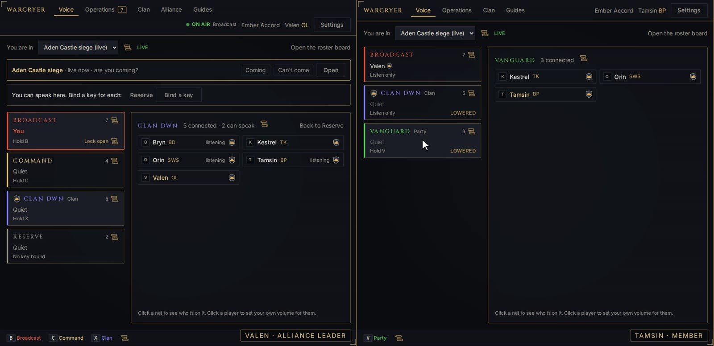
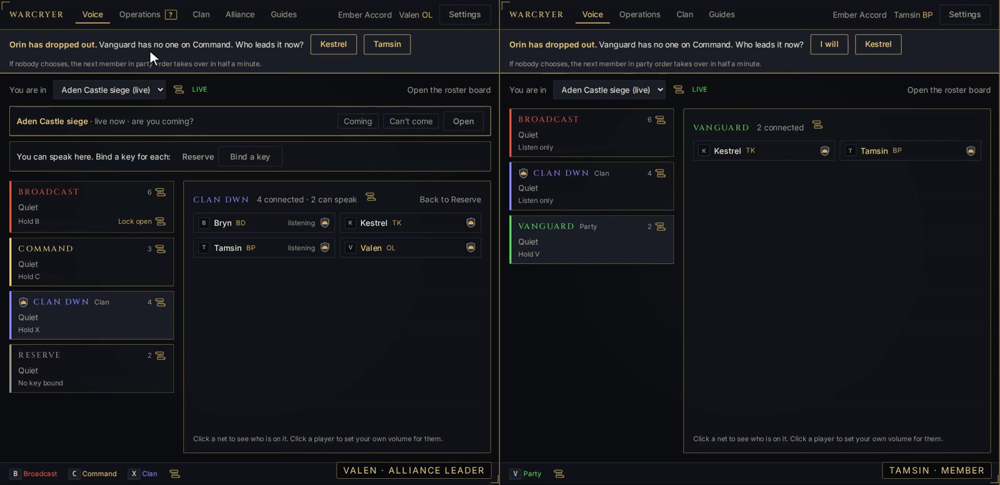
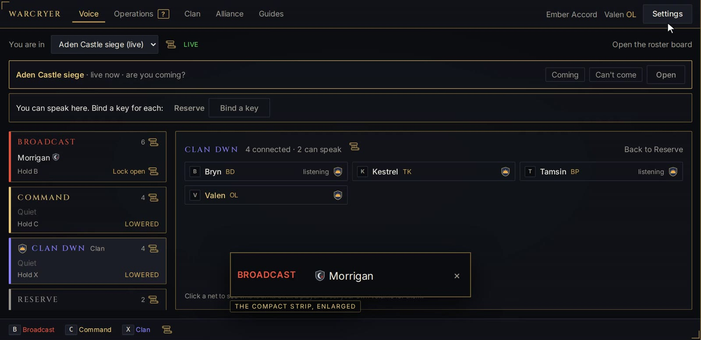
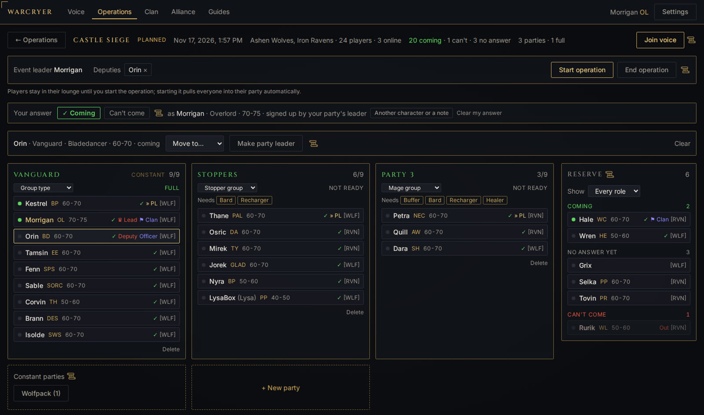
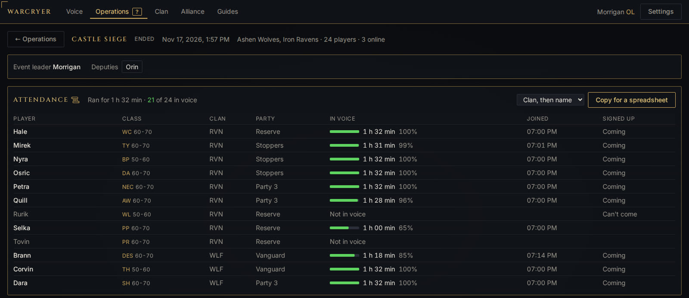
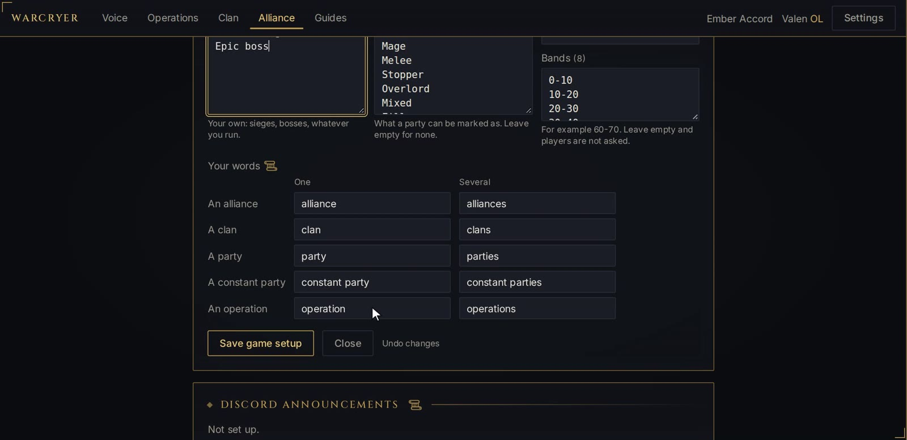

Who is coming
When an event is created, every member of its clans is asked in the app, and one click answers. A player bringing a different character says which, for that event only. The leader of a constant party can sign the whole party up.
Voice that follows the chain of command.
A free, open-source alternative to TeamSpeak for large alliances and clans. The event roster decides who hears whom, so nobody picks a channel and nobody talks over the call.
Free and open source. Windows 10 and 11. Updates itself. Not yet code-signed, so Windows warns on the first install.

A thirteen-minute walkthrough from the alliance leader's seat: signing in, clans and invite links, building the roster, going live, a briefing, a party losing its leader, and the log afterwards. It has captions and no sound. The clans and players in it are made up.
Playing it loads the video from YouTube. Or watch it on YouTube. It was recorded before sign-ups, party needs, attendance, game setup and separate alliances were added; those are shown further down. A new recording is on its way.
During an event every player is on several voice nets at once. Each net you may speak on has its own push-to-talk key, and you only ever hear the nets your place on the roster gives you.
Event leader and deputies speak
The call everyone hears. Used for the orders that move the whole alliance.
Leaders only
Event leader, deputies, clan leaders and party leaders plan here without the rank and file hearing it.
Clan leader and officers speak
Each clan's own orders, heard by that clan alone.
Everyone in the party speaks
Where the fighting is called. Push-to-talk or voice activation, your choice.
Players waiting for a party
Latecomers wait here with the organisers until they are placed.
While someone speaks on a higher net, the nets below it drop to a murmur and come back when the call ends. A Broadcast order is heard over party chatter without silencing it, and the lowered nets say so on screen.
Push-to-talk keys, including mouse side buttons, work while the game has focus. They are never taken away from the game, and no administrator rights are needed.


A party's leader is its only voice on Command. If the leader's game crashes or their connection dies, the party and the clan's officers are asked after about thirty seconds who leads now. One click settles it.
After thirty seconds more the next member in party order is promoted automatically. The new leader is told, and is on Command at once.
The compact strip is a small window that stays on top of others: one line for each net with someone speaking, with the speaker's crest and name, and "You" while your own mic is open.
It is an ordinary window you drag where you like. Nothing is drawn into the game and nothing is read from it, so it sits over a game in windowed or borderless mode.

The spreadsheet an alliance keeps for sign-ups, party lists and attendance is built in, and it knows who is actually in voice.
When an event is created, every member of its clans is asked in the app, and one click answers. A player bringing a different character says which, for that event only. The leader of a constant party can sign the whole party up.
Players choose their class and level once, from the alliance's own lists. Each party then shows whether it is full and which support roles it still has nobody for. Click a missing role to list the unplaced players who can fill it.
After the event, the board lists who was in voice and for how long, counted from the moment the operation started. Late arrivals, early leavers and players who said they were coming and never showed are plain to see.
One button copies the table, ready to paste into the spreadsheet where you keep points or DKP. Organisers see everyone; clan leaders see their own clan.


No bouncing between a website, a spreadsheet and a voice app. Each screen offers only what your role allows, and the server checks every action again.
Create a siege or raid, choose the clans taking part, build parties on a drag-and-drop board, then go live. Everyone on the roster is pulled into their nets at once.
Rename an operation, move its start, hand it to another event leader or change which clans take part. Players with the app open see it at once, and one made by mistake can be deleted.
Connect a Discord channel and every new, changed, started or cancelled operation is announced there, with the start shown in each reader's own time zone, for the players who do not have the app open.
Groups that always fight together are saved once, in order, with a leader. On the board one click places them all, which for most events is most of the roster.
A new operation can begin with the parties, leaders and deputies of an earlier one. Players who have left or been banned since are left out automatically.
Players come in by an invite link from their clan's leader, with a set number of uses and days; it lets them straight in or puts them on a waiting list to approve. A clan's crest appears beside each member's name when they speak.
Between events each clan has a lounge to sit and talk in. When an operation ends, everyone is returned there automatically.
Move a player mid-fight and their audio follows. Send someone to Reserve, hand over a party, appoint a deputy: voice rights change with the role.
The event leader can lock Broadcast open and talk without holding a key. A bar across the app says everyone is listening, and it releases itself if forgotten.
Every approval, move, role change and ban is recorded with who did it, and readable in plain sentences: all of it for alliance admins, their own clan's part for clan leaders.

Nothing about any one game is built in. An alliance sets the app up for the game it plays, and what is inside an alliance is seen and heard by nobody outside it.
Start an alliance from the app with a name and a game. You own it: create its clans, send each leader an invite link, appoint admins, and hand it on if you step down. Nobody can find it or ask to join from outside.
Classes and what each does, how big a party is, which roles every party should have, level or gear bands, your own kinds of event. Start from the lists for Lineage 2, World of Warcraft or Throne and Liberty, or from nothing, and change what you like.
If your players say guild where the app says clan, or raid where it says operation, say so once. The app, its guides, the invite page and the Discord announcements then speak your way, and the names you typed stay as you typed them.
Clans, players, operations, voice and the log belong to one alliance. Every release is tested by having one alliance's players try everything against another's, and all of it must be refused.

The Windows app is MIT licensed. Every release is built from the public repository by GitHub Actions and installed and tested on a clean Windows machine before it is published.
Sign-in happens in your own browser. The app asks Discord only who you are: no email address, no server list, no messages. It never sees your password.
Voice is relayed live and not stored. Key presses are not logged or sent; only the keys you bind are acted on. No telemetry, no ads. The server notes when you join and leave a net, which is how an event's organisers see who attended. You can delete your account, and everything kept about you, from the app.
The app keeps itself up to date, and accepts an update only if it carries the project's signature. Nothing installs mid-event: an update waits for a restart you choose.
Warcryer is in early testing. The server now keeps any number of alliances apart, and a beta for other alliances is being prepared; it is not open yet. The Windows client is open source and its releases are public.